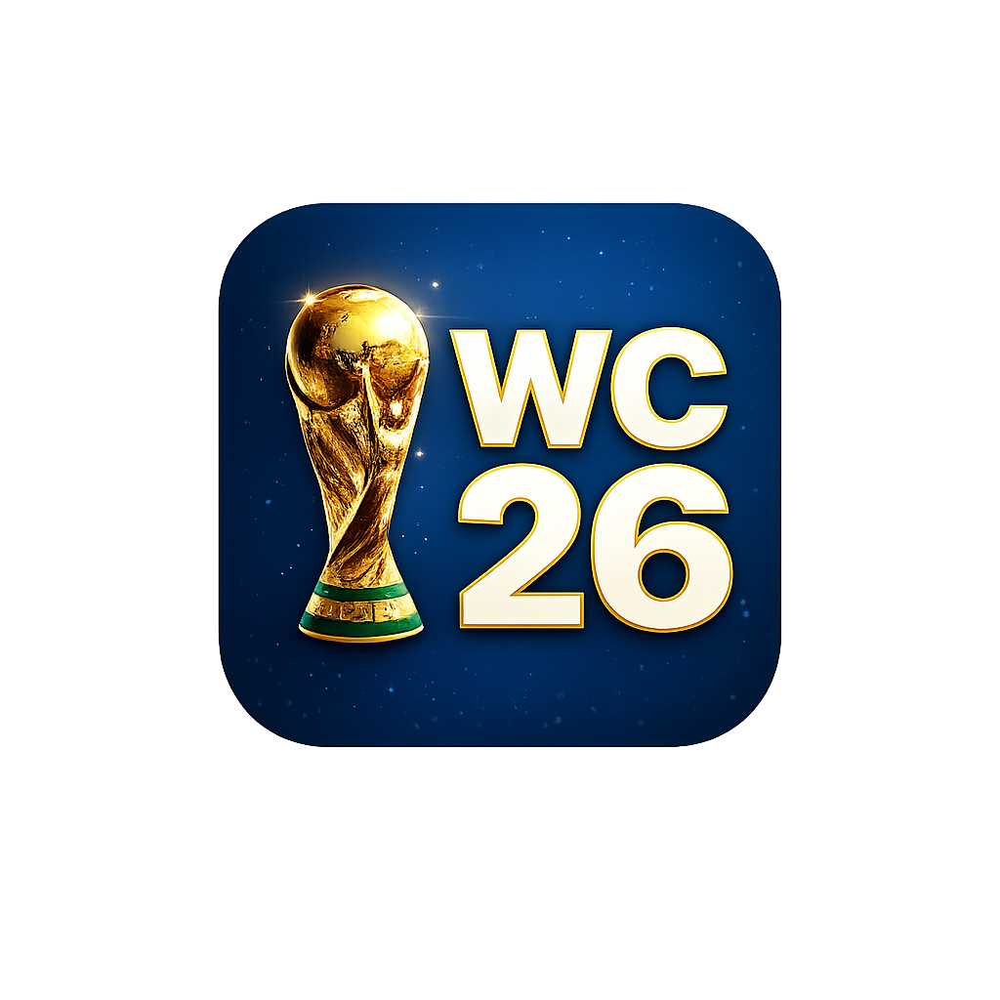

Yazan Fattal
Media Design & ICT Student
Available for internships
Media Design & ICT Student
From Damascus to Eindhoven — a journey of growth, discovery, and design.
Syria
2000 - 2002
Where my story began, building my roots, identity, and curiosity.
Saudi Arabia
2002 - 2016
A multicultural city where I learned adaptability and diversity.
France
2016 - 2019
High school years where I became more independent and creative.
Netherlands
2019 - Present
Studying Media Design & ICT and building projects with purpose.
A selection of projects where I explored design, interaction, and problem-solving.
Icebreaker game
A playful card game helping young adults start deeper conversations in a low-pressure way.
View on Drieam → Play Desktop → Play Mobile →
Three app concepts
Three mobile app concepts focused on accessibility, support, sustainability, and simple navigation.
View on Drieam →
Speed-meet Q&A game
A speed-meet experience that helps people connect through timed questions and playful interaction.
Watch Demo →
Smart recycling system
A smart disassembly concept for improving recycling, sorting, and circular material recovery.
View on Drieam →Roll. Unlock. Capture.
A complete digital Ludo board game with 4 tokens, dice sounds, capture mechanics, and AI opponents.
Play Ludo Game →Glass prototype & interaction
An interactive glass prototype exploring the theme of breaking things, not yourself.
View Project →
Tournament predictor
An interactive tournament predictor for the 2026 World Cup. Predict group winners, simulate knockout matches, and crown your champion.
Make Your Predictions →Interested in my work, collaborations, internships, or just want to say hi?
Feel free to reach out — I'd love to hear from you.
Connect and follow my work
Based in Eindhoven, Netherlands
Open to remote and hybrid work